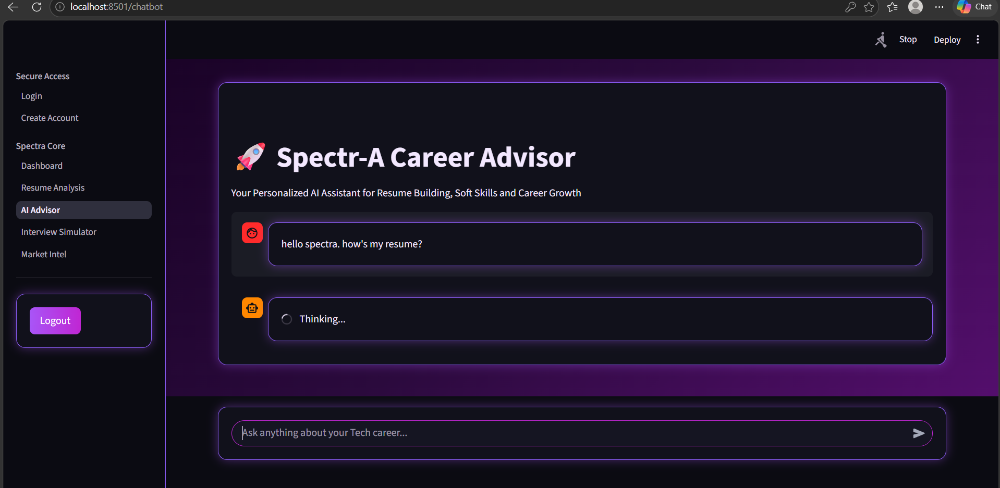
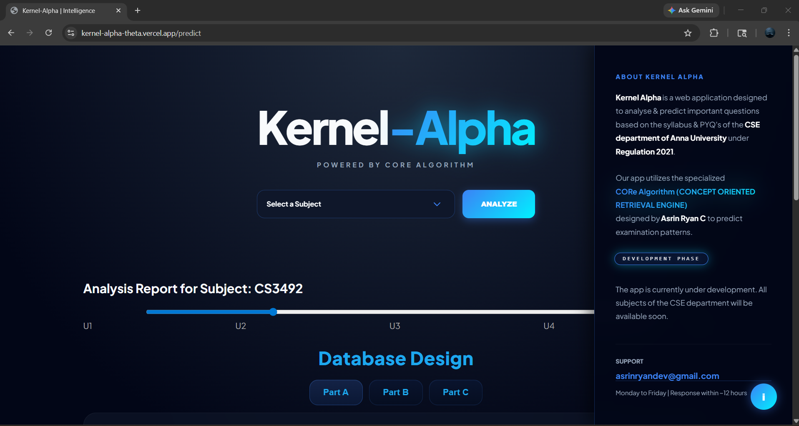
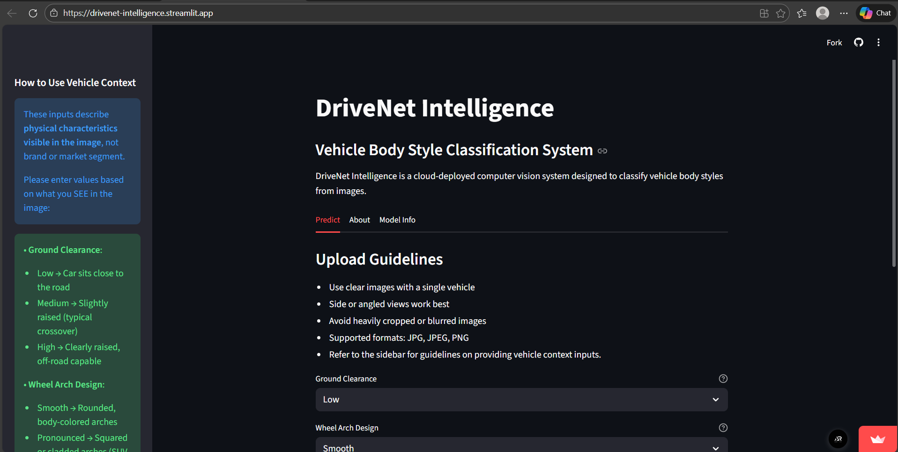
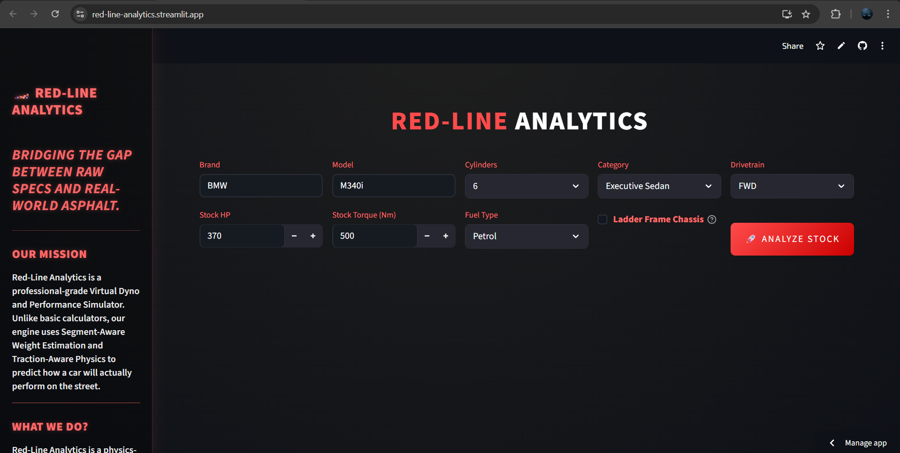
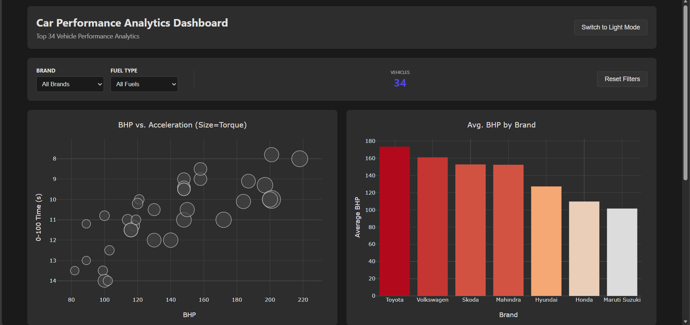
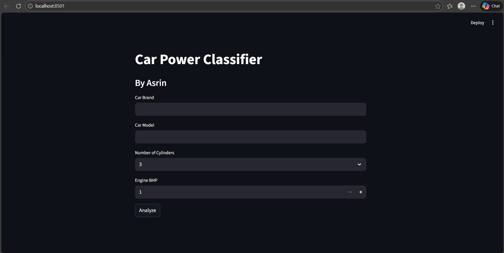

I build production-ready AI systems and deep learning models, specializing in computer vision, data-driven solutions, and real-time deployment.
View Selected Work GitHub
An AI-powered career Intelligence Platform built for tech students to evaluate readiness, identify skill gaps, and provide intelligent career guidance. SpectrA leverages a custom Retrieval-Augmented Generation (RAG) based approach to deliver personalized insights and interview preparation support.SpectrA is Powered by Gemini-Flash & Groq API.

Kernel Alpha is a precision-driven exam intelligence platform built for Anna University Computer Science Engineering students. Powered by a proprietary CORE Algorithm, it analyzes syllabus structure, previous year questions, and topic trends to predict high-probability exam questions with confidence levels — enabling smarter, rank-focused preparation.

A production-grade vehicle classification system designed to solve dataset scarcity issues in automotive AI. By freezing the MobileNetV2 backbone, I achieved high accuracy with minimal training data.

Red-Line Analytics is a physics-based virtual dyno that predicts real-world vehicle performance using interpretable rule-driven logic. It simulates tuning upgrades and delivers clear stock-vs-tuned performance insights with professional reporting.

Raw automotive data is often difficult to interpret. I built this front-end dashboard to transform complex engine metrics into clear, structured visual insights. It focuses on a clean UI to make technical data accessible to non-technical users.

An interactive analytics tool that automates vehicle performance categorization. Instead of black-box logic, this system uses interpretable rule-based ML to tag vehicles as MIN, MAX, or HYPER based on engineering metrics.
I design and build intelligent systems that go beyond models — combining AI Agents, RAG pipelines, and automation workflows to solve real-world problems. My work focuses on delivering scalable, production-ready solutions across domains, with additional expertise in automotive intelligence.
Strong domain understanding applied where relevant.
Building intelligent systems that can reason, decide, and act.
Transforming unstructured data into intelligent, queryable systems.
Designing visual intelligence systems using deep learning.
From data to deployment — building complete ML workflows.
Combining linguistic intelligence with deterministic logic for robust AI applications.
I am a Computer Science Engineering student with a specific focus on the intersection of AI and Automotive Engineering. Unlike generalist developers, I design AI systems tailored to specific domains, combining machine learning, computer vision, and real-world context to deliver meaningful solutions.
Currently, I am building real-world AI systems focused on intelligent automation, computer vision, and data-driven decision making — transforming raw data into actionable insights across multiple domains.
TensorFlow & Keras // Great Learning Academy
Google Skill Badges // Google Cloud Skill Boost
AI & ML Foundations // Google Developer Program MLCC